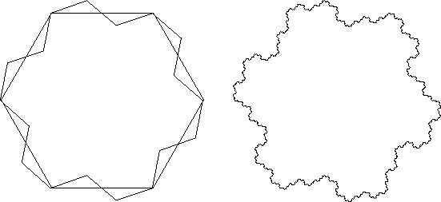

Fractal tilings
| When beginning to discuss how regular divisions of the plane can help our perception of infinity, Escher discussed the shape of the tiles. |
|
| Another approach that captures the complexity of the world around us is to use fractal tiles. |
| For example, starting with a tessellation by hexagons, replace each line segment by three line segments as shown on the left. |
|  |
| This is a version of midpoint modification, so at each stage the resulting shapes tessellate the plane. |
| The limiting fractal shapes are called Gosper tiles. |
| Other approaches to fractal tilings have been explored by Peter Raedschelders |
| http://home.planetinternet.be/~praedsch |
| and Robert Fathauer |
| http://members.cox.net/fractalenc/encyclopedia.html |
Return to Background.